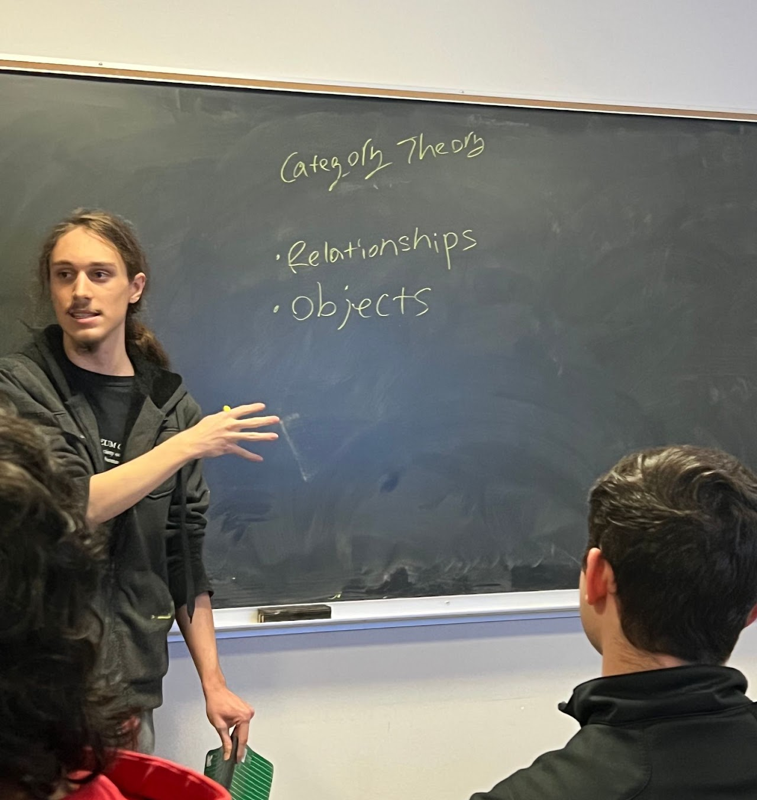
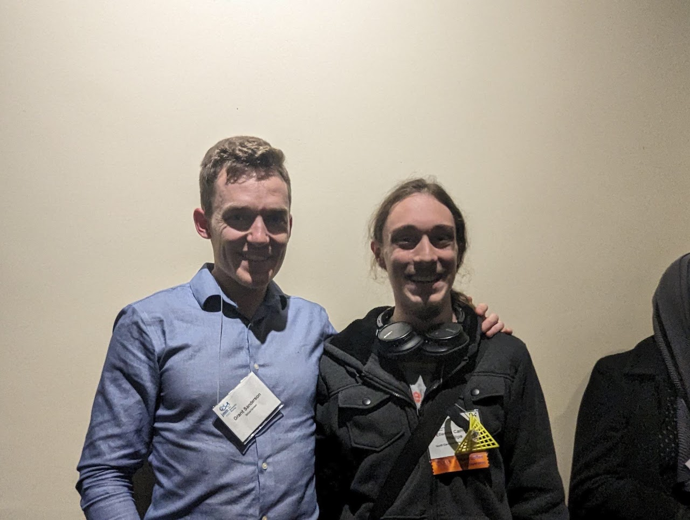
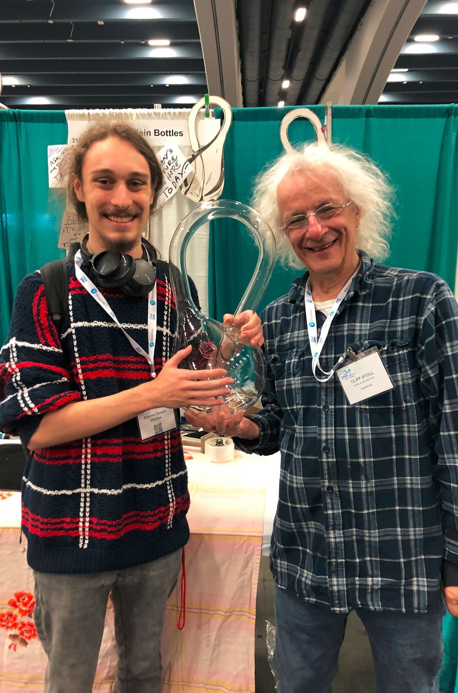

About me
Hello, I'm Etienne. (pronunciation)
I'm a third-year PhD candidate at UC Berkeley, advised by Thomas Scanlon and working closely with Kevin Carlson at the Topos Institute. Before Berkeley, I studied mathematics at NC State University.
My research focuses on pure and applied category theory, including higher (double) categories and connections to computer science, machine learning, and logic.
Outside mathematics, I love hiking, coffee, and board games.
Category theoryHigher categoriesComputation & logic
Talks & conversations
A reading recommendation
A Mathematician's Lament
By Paul Lockhart. I think every single person alive needs to read it.


